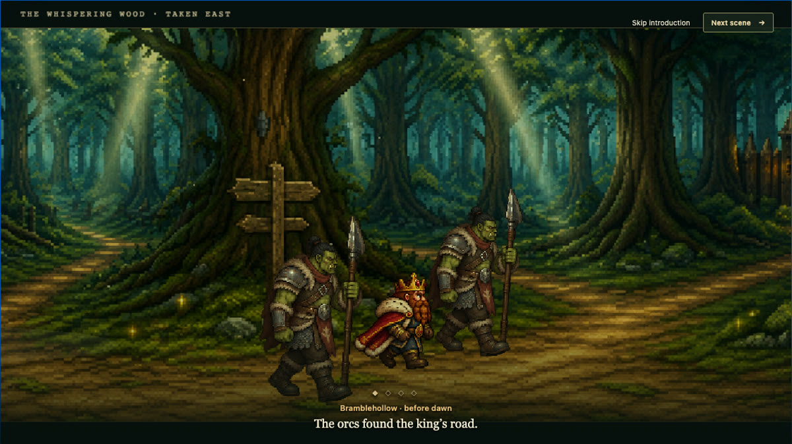
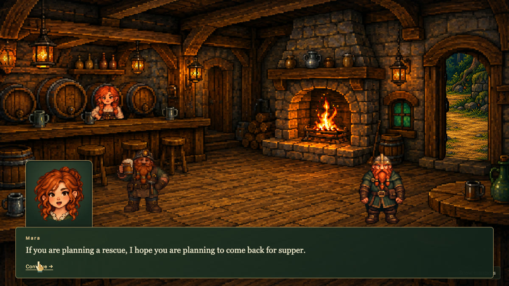
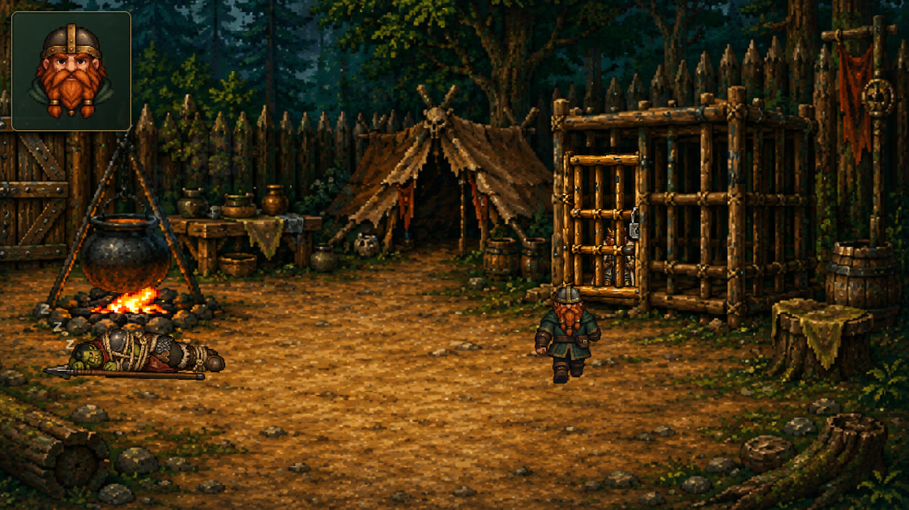

01 THE IDEA
A living world,
not a blank canvas.
Pointlesh gives you the common machinery of a point-and-click game: places to walk, people to meet, things to use, conversations to have, and a world that can be saved and restored.
Visual decisions stay visual. Draw a walkable polygon, drag a character into place, or tune a dialogue choice in the designer and see the result in the running game.
Meet the four packages
01 · A king is taken
02 · Clues are traded
03 · A rescue unfolds